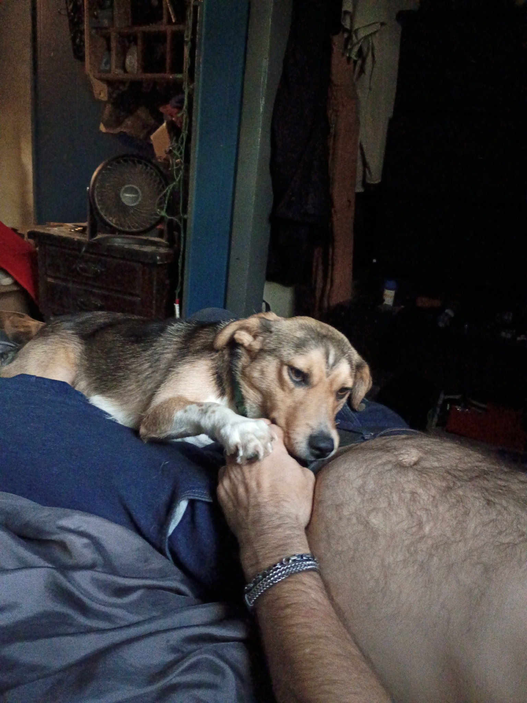

Have you seen our dog?
Dog's name[DOG'S NAME]
Last seen[CITY / NEIGHBORHOOD / NEARBY LANDMARK]
Date last seen
Time missing
Calculating…
Description[BREED / SIZE / COLOR / COLLAR / IDENTIFYING FEATURES]
Wearing[HARNESS / COLLAR / TRACKER]
⚠️ If you see MARS: Please do not chase, shout, or corner him. If it is safe, take a photo, note the exact location and time, and contact us immediately.
How you can help ❤️
Share this page with neighbors, local community groups, shelters, veterinary offices, and friends around Tulsa. If you have doorbell or security camera footage from the Archer St. Bridge area, please check it around the time MARS went missing.
When reporting a sighting, include the location, time, direction of travel, and a photo if possible.